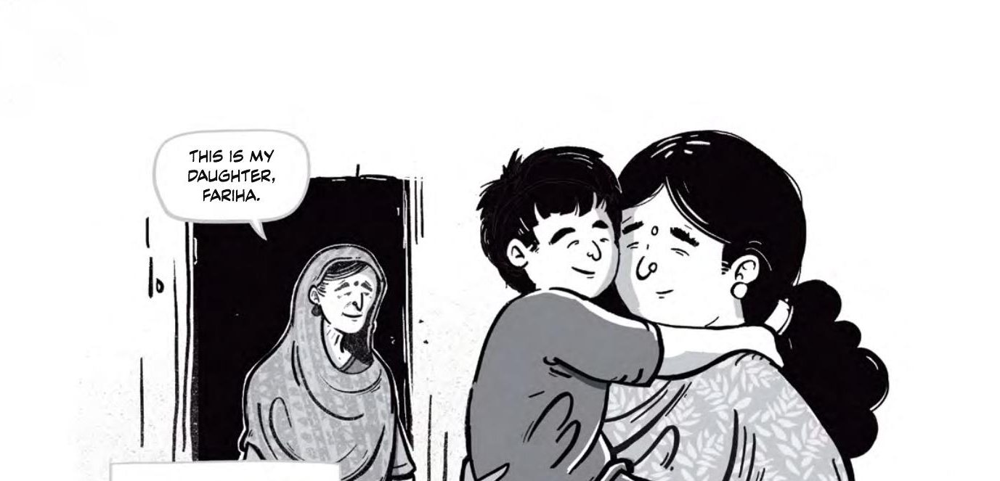

How it works: read the comic pages → answer the question about today's big idea → see what the comic got right and wrong → write 1–2 sentences. Done = all parts green, then turn in at the bottom. Heads-up: this is a true story about a building collapse where workers died.
Word help (tap to open)
- Globalization = countries trading, making and selling things all over the world
- Garment = a piece of clothing
- Western = from the U.S., Canada, and Europe
- Seamstress = a woman who sews for a living
- Evacuate = get everyone out fast
- Brand = the company name on the label, like Walmart or Benetton
- Building code = safety rules for how buildings must be built
- Abysmal = terrible
- Dock your wages = cut your pay
- Accord = a written agreement companies must follow
- Activist = someone who works hard to change things

Click the page to make it bigger.
Turn in your work
Your work saves on this device, so you can come back later. Your teacher sees it after you turn it in.
Comic: Made in Rana Plaza by François Simard (January 2023), a free graphic novel from AQOCI (a group of Quebec aid organizations) with Oxfam Canada and Development and Peace, made with support from Global Affairs Canada. English translation by Amie Monroe. Story pages 4–9 and 11–14 shown whole, for class study.